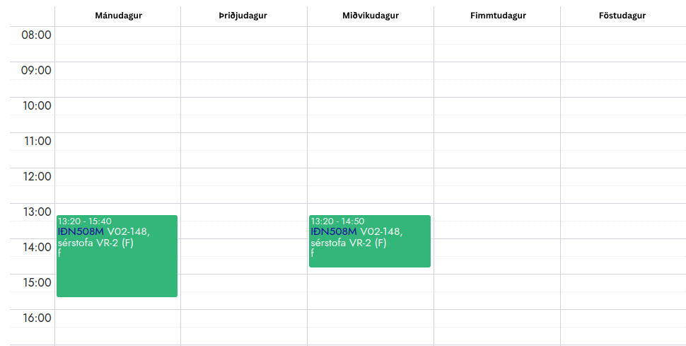

Aðgerðagreining 2
IÐN508M
Hæfniviðmið
Að loknu námskeiði eiga nemendur að hafa öðlast
eftirfarandi hæfni:
Mótað stærðfræðilíkön fyrir ákvarðanatöku, einkennt ákvörðunarverkefni hvað varðar samhengi, markmið, takmarkanir, aðföng og forsendur
Gefið lýsingu á og túlkað stærðfræðilegt líkan, skýrt forsendur og takmarkanir líkansins.
Útfært stærðfræðilegt líkan í tölvu.
Þekkt og valið viðeigandi lausnaraðferðir.
Haft skilning á reikniritum og takmörkunum þeirra.
Metið stærðfræðilíkan, athugað hvort það sé rétt og fullnægjandi fyrir ákvörðunarverkefni.
Fyrirkomulag kennslu
Kennsla fer fram í stofu 148 í VR2 tvisvar í viku:
Mánudaga kl. 13:20 - 15:40
Miðvikudaga kl. 13:20 - 14:50

Kennslustundir verða að mestu nýttar í verkefna- og hópavinnu.
Námslotur
Námskeiðinu er skipt niður í 5 námslotur:
Námslota 1
Heiltölubestun (Integer Programming): Líkangerð
Búum til líkan til að besta æfingatöflu í KR
Námslota 2
Heiltölubestun (Integer Programming): Reiknirit
Simplex: Upprifjun á hvernig simplex reikniritið er notað til að leysa línuleg bestunarverkefni
Relaxation: Slökum á heiltöluskorðum
Branch-and-bound: Ein leið er að skipta verkefninu í minni undirverkefni þar til allar breytur verða heiltölur.
Cutting planes: Önnur leið er að skera burt hluta af lausnarúminu án þess að missa heiltölulausnir.
Gomory Cuts: LP taflan notuð til að ákveða ákjósanlegan skurð
Branch-and-cut: Það besta úr báðum heimum
Námslota 3
Slembin bestun (Stochastic Programming)
Bestum togararall með tilliti til óvissu í veiði
Námslota 4
Markov Decision Problems and Discrete Stochastic Dynamic Programming
Kynning á Markov Decision Processes (MDP)
Bellman-jöfnur
Dynamic Programming aðferðir
Notum dynamic programming aðferðir til að leysa birgðastjórnunarverkefni með slembinni eftirspurn
Námslota 5
Prófundirbúningur
Rifjum upp námsefnið. Verkefnaskil tengjast efni námslota 1-4.
Námsmat
Verkefni 1
Verkefni 2
Verkefni 3
Verkefni 4
Verkefni 5
Lokapróf
Til þess að fá próftökurétt þarf nemandi að fá
minnst 5 að meðaltali í verkefnum.
Til þess að standast námskeiðið þarf nemandi að fá
minnst 5 í lokaprófi.
Kennsluefni
Valið efni úr:
Verkefni og greinar sem nálgast má á vefsvæði námskeiðsins: Námsefni .
Verkfæri
Yfirlit yfir helstu verkfæri sem notuð verða í
námskeiðinu.
Python
Gurobipy
Jupyter / Colab
ChatGPT og önnur AI verkfæri
Python
Við munum nota Python í þessu námskeiði. Ef þið eruð
ekki með það uppsett getið þið sótt það á
python.org/downloads . Mælt með að nota Python 3.10 eða nýrra.
Mikilvægt er að temja sér góðar venjur við að skrifa
kóða. Mælt er með að nota type hints (sjá
typing docs ).
Gurobipy
Python viðmót fyrir Gurobi.
pip install gurobipy
Sækið Named-User Academic License á
gurobi.com
(það þarf að vera tengdur háskólaneti).
Jupyter / Google Colab
Verkefnum er skilað í Jupyter Notebook. Google Colab
hentar vel fyrir samvinnu.
colab.research.google.com
ChatGPT og önnur AI verkfæri
Notið til hugmyndavinnu og útskýringa
Verið gagnrýnin á svör
Skiljið og getið útskýrt kóðann
chat.openai.com